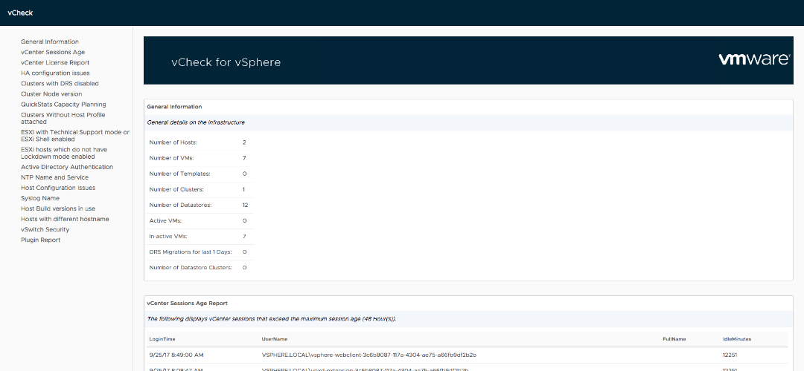

vCheck-vSphere
The original and the best. vCheck for vSphere will highlight potential problems with your vSphere environment.


The original and the best. vCheck for vSphere will highlight potential problems with your vSphere environment.

vCheck is an extensible reporting framework, which can be used to generate HTML reports.
Reports for four different technologies- vSphere, NSX, Active Directory, Exchange and DFS.
Over 150 different plugins over all projects.
vCheck is a PowerShell HTML framework script, the script is designed to run as a scheduled task before you get into the office to present you with key information via an email directly to your inbox in a nice easily readable format.
This script picks on the key known issues and potential issues scripted as plugins for various technologies written as Powershell scripts and reports it all in one place so all you do in the morning is check your email.One of they key things about this report is if there is no issue in a particular place you will not receive that section in the email, for example if there are no datastores with less than 5% free space (configurable) then the disk space section in the virtual infrastructure version of this script, it will not show in the email, this ensures that you have only the information you need in front of you when you get into the office.This script is not to be confused with an Audit script, although the reporting framework can also be used for auditing scripts too. I don't want to remind you that you have 5 hosts and what there names are and how many CPUs they have each and every day as you don't want to read that kind of information unless you need it, this script will only tell you about problem areas with your infrastructure.